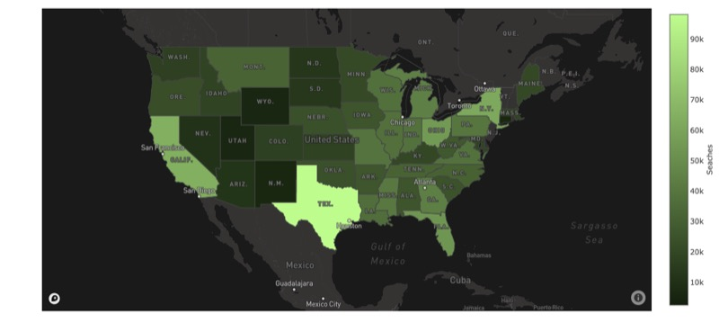
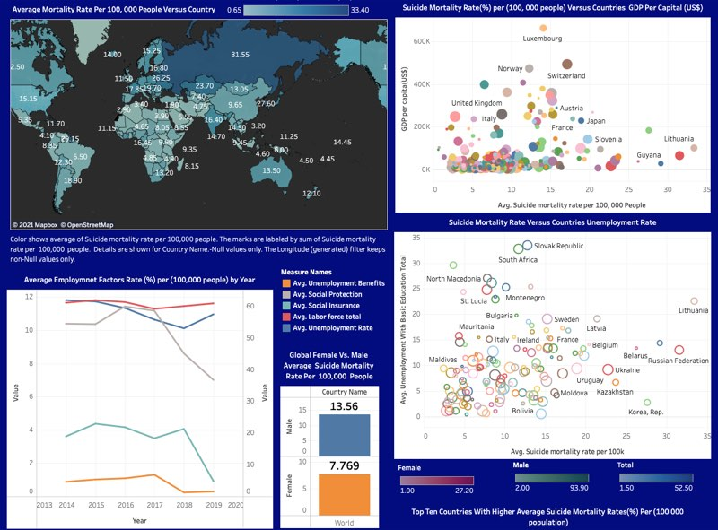
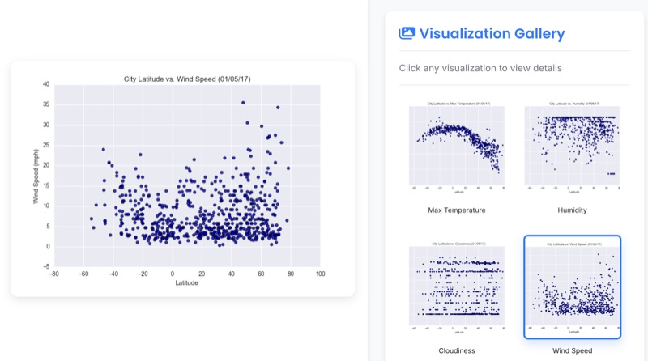
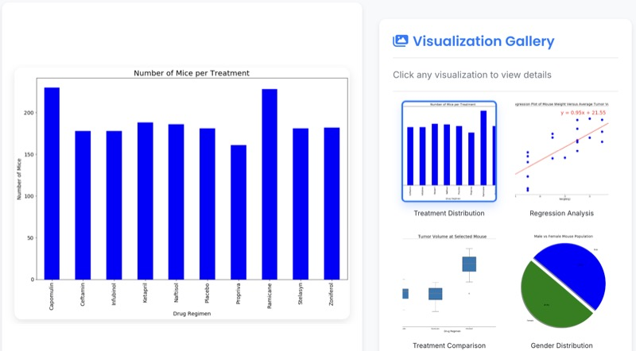
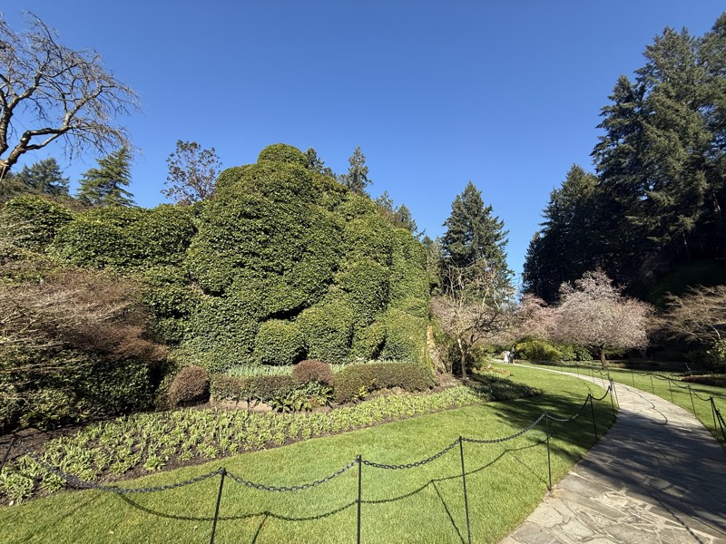

97%
Python
Pandas, NumPy, Scikit-learn, TensorFlow
Toronto, Canada
Data Scientist & Research Analyst
10+ years mining, analysing and visualising data in fast-paced digital environments — from public-opinion research to collective-bargaining analytics and AI-assisted document extraction.
Professional path
Hello, I'm Ermias Gelaye Gaga — a data scientist and data research analyst with over 10 years of experience working in fast-paced, dynamic digital environments with a strong focus on data handling and analysis.
I hold a Master of Science in Data Science from Eastern University, a Master of Science in Cognitive Science (Cognitive Neuroscience stream) from CIMeC – Center for Mind/Brain Sciences, University of Trento, and a Certificate in Data Analytics and Visualization from the University of Toronto School of Continuing Studies.
I'm passionate about using my multidisciplinary training to collaborate with research teams on mining, analysing, visualising and delivering insights from heterogeneous data sources. I've worked on exploratory analysis, visualization and data-pipeline projects — some of them are showcased below with links to their code.
Core competencies
Self-assessed proficiency across languages and data-science practice.
Pandas, NumPy, Scikit-learn, TensorFlow
Database design, query optimisation, complex data operations
Advanced statistical analysis, visualization with ggplot2
Enterprise applications, backend systems, data processing
Data science portfolio
Each project links to a live demo and its source code.

Data analysis · interactive mapInteractive dashboard development
Where Americans search Google for nine health conditions across 210 metro areas (2004–2017), which health worries travel together, and how CDC death rates changed over the same period.

Machine learning · TableauPopulation-level analytics · machine learning · Tableau
Who seeks mental-health treatment in a survey of 1,258 tech workers, and how suicide rates in 185 countries changed from 2000 to 2021 and what goes with them — to support prevention-focused insight.

API · visualizationData visualization project
How does weather change closer to the equator? Data from 500+ cities worldwide, collected and analysed end to end.

StatisticsStatistical analysis project
Data from 249 mice with SCC tumour growth, used to compare the performance of different drug regimens with statistical methods and hypothesis testing.

Web app · personalPhoto platform · front-end engineering
My photography portfolio, built as a fast, installable web app: 1,000+ photos with search and categories, a travel map of every location, and a knowledge-based photography assistant.
Professional journey
Data analysis and strategic insight to drive business decisions.
Researched and extracted business data to acquire new customers across industries using internal tools and external sources.
Data research, sentiment analysis and recommendations to government agencies on public complaints and social-media engagement.
Academic career
Eastern University · St. Davids, Pennsylvania, USA
Machine learning, advanced analytics (Python, R, SQL), database management, data visualization and statistical modelling — applying data science to business problems and building ethical, real-world AI solutions.
University of Toronto School of Continuing Studies · Toronto, Canada
A 24-week immersive program in working with large datasets and generating data-driven insights.
CIMeC, University of Trento · Rovereto, Italy
Research-focused master's in cognitive neuroscience.
Hawassa University · Hawassa, Ethiopia
Psychological sciences and techniques for analysing and evaluating behavioural processes.
Let's work together
Open to data science roles, research collaborations and project inquiries.
Online
Answers come from a curated knowledge base about this portfolio and data science.